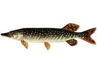

Щука.


Другий (після сома) за величиною і ненажерливістю хижак в наших водоймах. Історії рибальства відомі випадки лову щук довжиною 2 м. і вагою 40 кг. Але такі велетні рідкість. Звичайні розміри щук, яких ловлять аматорськими снастями 60-80 см. в довжину і 2-4 кг вагою. Водиться щука майже всюди, мабуть, легше сказати, де її немає, а не любить вона лише дрібні замулені ставки, де зазвичай буває дуже поганий кисневий режим. Живе усамітнено і осіло, далеких подорожей не робить. Улюблені місця проживання зарослі травою прибережні ділянки, закорчовані неглибокі ями, ділянки нижче перекатів і гребель. Тільки дуже великі особини тримаються на глибині. Своїм зовнішнім виглядом щука різко відрізняється від усіх прісноводних риб. Її вкрите дрібною лускою і слизом тіло сильно видовжене. Голова більша з витягнутим і сплюснутим рилом. Величезний рот (він займає половину голови) оснащений безліччю дрібних і великих зубів, зверненихвістрями всередину (щоб жертва не могла вислизнути). Спинний, підхвостовий і хвостовий плавники нагадують оперення стріли для лука, що дозволяє щуці робити сильні і цілеспрямовані кидки в воді. Окрасою щуки є маскувальний характер і залежить як від навколишнього середовища, так і від віку риби. У молодих щук переважають світлі сіро-зелені тони. Дорослі особини забарвлені темніше. Однак ті, що живуть серед водоростей, значно світліше щук, що мешкають в глибоких ямах і вирах. Спина дорослої щуки зазвичай темно-бура; боки покриті великими плямами бурого, оливкового або синьо-зеленого кольору, які зливаючись, утворюють яскраво виражені поперечні смуги. Парні плавці мають сіро-оранжевий колір; спинний, анальний і хвостовий плавники буро-червонуваті з великими сіро-зеленими плямами. Втім, варіанти забарвлення у щуки можуть змінюватися: все залежить від того, яке місце вона облюбує для своєї засідки. У торф’яних кар’єрах і лісових річках щуки мають оранжево-буре забарвлення з золотистим металевим блиском. Статевозрілою щука стає вже на третьому році життя. Дрібну (2,5-3 мм в діаметрі) зеленувато-жовту ікру самка викидає на мілководді на торішню траву, іноді на дно. Відбувається це відразу як тільки розтане лід, а часом і під льодом, при температурі води 4-6°С. Нерест у щуки групової та галасливий, одну ікрянку супроводжують 2-4 молочника і на мілині возяться так, що бризки летять на всі боки. Молодь щуки (як і всіх риб) перший час харчується планктоном, але, підростаючи, починає знищувати мальків інших риб. До кінця першого року життя стають завзятими хижаками, хоча не гребують і дрібними безхребетними. Головна їжа дорослої щуки дрібна риба. Віддає перевагу вона представників сімейства коропових: верховодці, плотві, краснопірці??, яльцю, карасю. Жадібність щуки дивовижна. На спінінг не раз виловлювали хижачку, в пащі якої стирчали непроковтнуті мальки, а вона, тим не менш, спокусилася і на блешню. Але не тільки рибу знищує щука не щадить вона і ніякої інший живий тварі: голодна, нападає на водоплавних птахів, пожирає водяних щурів, землерийок, білок під час їх переправи через водойму, пуголовків, зелених жаб (випадково схоплену сіру жабу тут же випльовує). А ось мертвих тварин та риби не їсть. Коли звичного корму мало, нападає на своїх братів менших. Ловлять щуку цілий рік: спінінгом, живцевою снастю, доріжкою, гуртками, жерлицями і поплавцевою вудкою. Але в її клюванні є піки активності, які риболов повинен враховувати. Посилений жор у щуки починається через тиждень-півтора після нересту. Однак триває він недовго 10-12 днів. Влітку клювання часом слабшає, а в жаркі і тихі сонячні дні припиняється зовсім. З настанням холодів починається осінній жор, який триває до льодоставу і мало залежить від умов погоди. Інтенсивно годується щука і по першому льоду. Потім у січні-лютому її клювання слабшає і поновлюється лише наприкінці зими, коли у щуки починається короткочасний перед нерестовий жор. Зазвичай щука ловиться протягом всього світлого часу доби. Але для кожної водойми є свій годинник кращого клювання. В одному це ранній ранок (великі щуки, до речі, скрізь беруть активніше вранці), в іншому перед настанням сутінків. У вітряну погоду щука непогано клює в середині дня. Особливості водойми треба враховувати і при виборі способу лову. Наприклад, у невеликій річці, зарослої лататтям, краще підійде поплавкова вудка, ніж спінінг. На тихому і глибокому плесі більш уловистими, безумовно, виявляться гуртки, а не жерлиці. Полювання на щук не відрізняється великою різноманітністю приманок: в основному це живці і блешні. Але ось яка сьогодні більш уловиста блешня, яку саме рибку використовувати як живця? Питання, вирішувати які рибалці частіше всього доводиться на місці, досвідченим шляхом. Тому деякі, вироблені загальні правила безумовно, треба враховувати. Так, в озері, де немає плотви, недоцільно цю рибу використовувати в якості живця. Для щуки така приманка виявиться незвичною і вона не зверне на неї уваги. Вибір блешень сьогодні практично необмежений і в принципі будь-яка може привернути увагу хижачки. Але знову ж практикою встановлено, що навесні і влітку краще застосовувати невеликі обертові, а восени великі блешні, що коливаються. Чимало цінних спостережень накопичено також з ведення приманки в товщі води. Способів ведення декілька: швидкий, повільний, біля поверхні, біля дна, впівводи, монотонний, переривчастий, ступінчастий і т. п. У кожного є свої прихильники. Але вибирати той чи інший спосіб часто доводиться, погодившись з умовами лову. Чи не поведеш, скажімо, важку блешню біля дна в закорчованій ямі: вона тут же стане жертвою зачепа. Крім того, якщо не приносить успіху один спосіб, треба пробувати інші. Клювання щуки на живців і поплавкову снасть мало чим відрізняється від клювання інших хижаків: схопивши живця, вона повільно пливе в сторону (частіше всього до берега), на ходу перевертаючи його головою до своєї глотки , потім зупиняється і заковтує. У цей момент і треба підсікати. Підсічка повинна бути сильною, наскільки дозволяє міцність снасті, і широкою. Спіймана щука, прагнучи звільнитися від гачка, бурхливо пручається: кидається з боку в сторону, іноді високо вистрибує з води (робить «Свічку») і трясе головою, широко розкривши пащу. Невелику щуку можна витягувати з води, не церемонячись. З великою – справа складніша. При виведенні особливу увагу слід звертати на кут нахилу вудилища. Треба намагатися, щоб він становив не менше 50-60 градусів до поверхні води. В іншому випадку навіть товста волосінь може бути обірвана. Витягати видобуток з води треба гострим багориком або глибоким сачком. Ні в якому разі не пхати пальці під зябра. У човні щуку слід негайно умертвити. Якщо цього не зробити, оговтавшись від шоку, вона може переплутати снасті або перестрибнути через борт. Обережно треба витягувати гачок з щучої пащі. Для цього необхідно користуватися екстрактором або, на худий кінець, невеликою паличкою, яку можна покласти поперек пащі хижачки. Уколи щучих зубів дуже болючі, довго не гояться і можуть викликати серйозні ускладнення. М’ясо щуки – смачне і поживне. З нього роблять юшку, холодець, котлети, начинку для пирогів і т.п. Ікру до вживання повинна солитися не менше 4-5 годин.